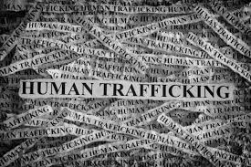
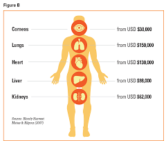
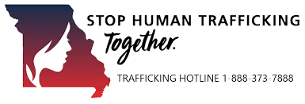

While I understand that this is a single class assignment and only a handful of people will see this, it is also an opportunity to share a topic that I am very passionate about. I find that it is important to educate people about the underground world of human trafficking as it is bot something that most people have at the forefront of their mind and even when they do consider the topic, the statistics and stories are beyond imagination.
Human Trafficking is the illegal, coerced, recruitment, transportation, transfer, harbouring or receipt of persons. There are many different reasons of human trafficking but the most common reasons are for labor/slavery, prostitution, sexual exploitation, and black-market organ trade.
The reasons behind this exploitation can be broken down into two sub-categories: human trafficking for sexual and labor explotation, and human trafficking for organ harvesting. Each of these reasons target different types of victims in order to tailor fit the traffickers needs, especially in the case organ trade.
The most widely recognized form of human trafficking is prostitution. Society has implemented the ideology of women in low-income areas who resort to trading their bodies in exchange for money. This is an example of how blanket misconceptions allow for the exploitation to continue. For starters, while the majority of people exploited into the sex industry are women, they only make 72%. That means that over a quarter of forced sex workers are male. Most of the people sold into the sex industry do so under false misconcetions/rouses, kidnapping, coercion through drugging, and attempts to escape poverty or percesution and are then groomed. While slavery was “technically” outlawed in 1865, it continues to be rampant account the word and makes up for the majority of adult males that are exploited. This road is CURRENTLY entered into less so by kidnapping and drugging and more so by persons trying to escape poverty and falling victim to taking jobs on farms, building sites, and in factories under false pretences and then are locked into the world of trafficking.
Organ trafficking is often far-less talked about than sex trafficing. Organ trafficking is most commonly tied with organized crime. Why is this done? It’s simple really, low supply and high demand which makes it incredibly lucrative to anyone who has a supply with a human body totalling close to $500,000.00 in organs. There certainly are legal organ transplants that are done through donations, however, if you’ve ever known anyone who has ever been on a transplant list you know how difficult it is to find a reputable match and how more than 50% of organ donations cannot be used as their functionality is not up to certain standard. It is estimated that more than 10% of all organ transplants that are performed globally are done with trafficked organs. What is the most commonly trafficked organ? Kidneys. The World Health Organization estimates that there is over one kidney harvested and sold on the black market every hour.
https://www.acamstoday.org/organ-trafficking-the-unseen-form-of-human-trafficking/
